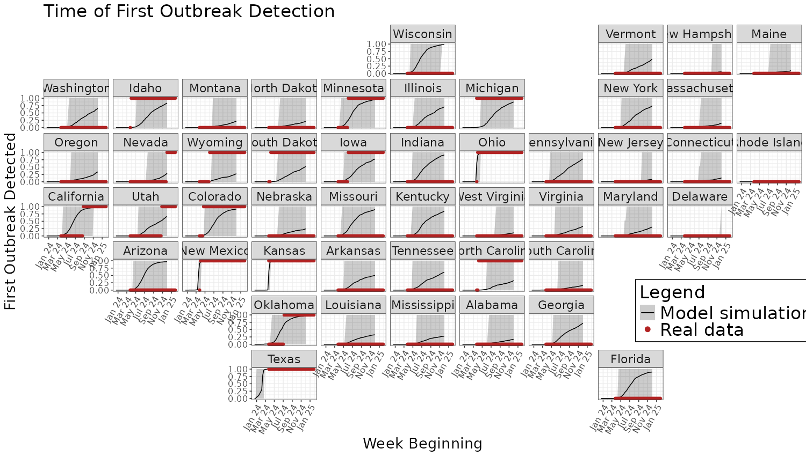
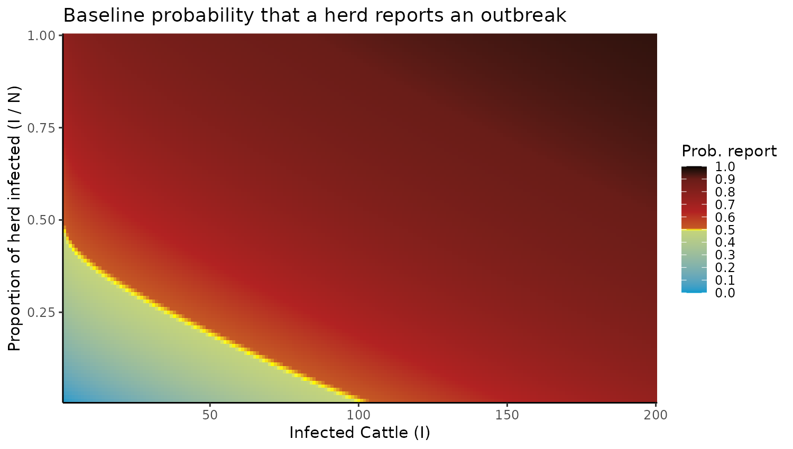
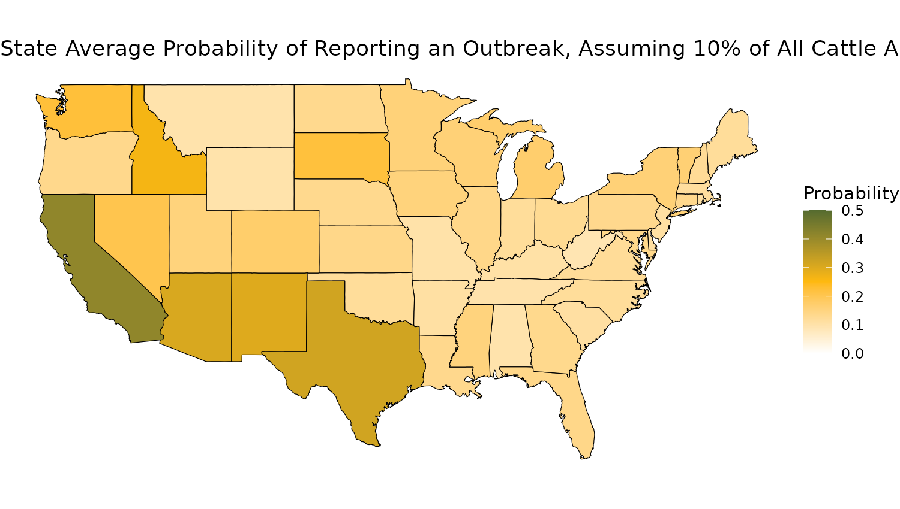
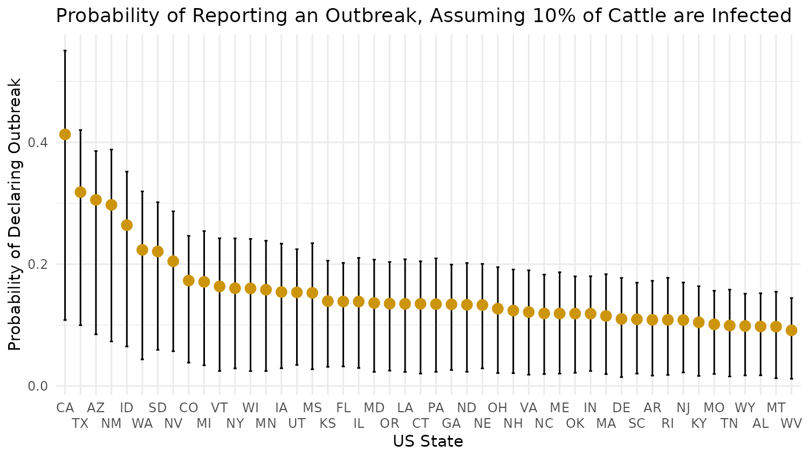
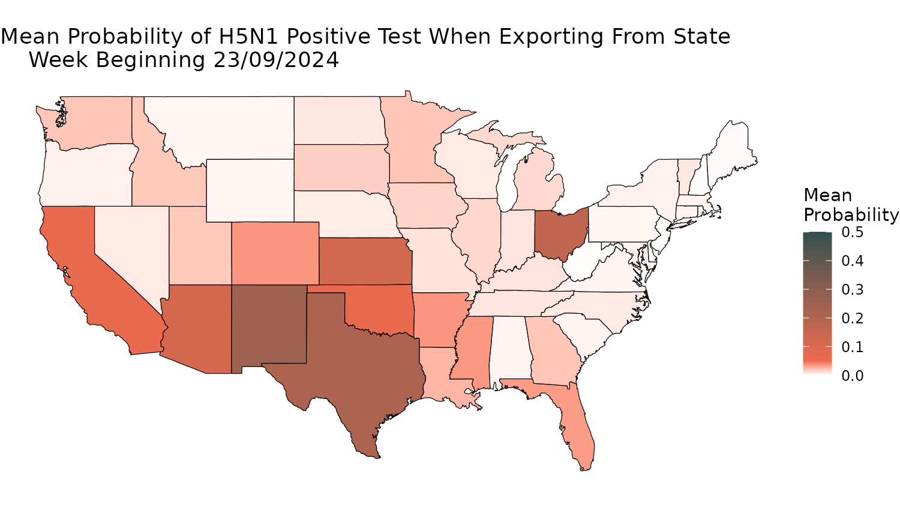
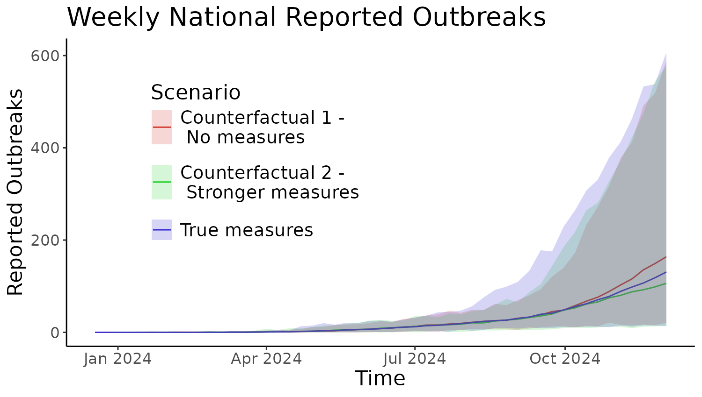

This vignette walks through using the model simulations generated in the previous vignette - “2) Simulating the model with fit parameters”, to plot the figures shown in the associated publication “A mathematical model of H5N1 influenza transmission in US dairy cattle”.
library(cowflu)
library(dust2)
library(monty)
library(dplyr)
#>
#> Attaching package: 'dplyr'
#> The following objects are masked from 'package:stats':
#>
#> filter, lag
#> The following objects are masked from 'package:base':
#>
#> intersect, setdiff, setequal, union
library(tidyr)
library(lubridate)
#>
#> Attaching package: 'lubridate'
#> The following objects are masked from 'package:base':
#>
#> date, intersect, setdiff, union
library(ggplot2)Load the model simulations
We load a set of model simulations from the previous vignette. Note, the results plotted in the main manuscript are from a simulation of 20,000 iterations. For simplicity, those shown below use only 500 iterations.
# Path to the .rds file
file_path <- system.file("extdata", "example_sim_results.rds", package = "cowflu")
# Load the .rds file
Sim_results <- readRDS(file_path)Figure 2
First we load the real world data that will appear in the figure.
## Load data:
###################
data_outbreaks <- cowflu:::outbreaks_data$weekly_outbreaks_data
data_outbreaks <- cowflu:::process_data_outbreak(data_outbreaks)
data_week <- dust2::dust_filter_data(data_outbreaks, time = "week")
extended_outbreaks_data <- data_week %>%
tidyr::unnest_longer(outbreak_detected) %>%
mutate(state = rep(cowflu:::usda_data$US_States, times = nrow(data_week)))
extended_outbreaks_data <- extended_outbreaks_data[,c(2,3,4)]
colnames(extended_outbreaks_data) <- c("Time", "outbreak_detected", "US_state")
## Add number of herds per state:
extended_outbreaks_data$total_herds <- 0
for(i in 1:nrow(extended_outbreaks_data)){
extended_outbreaks_data$total_herds[i] <- cowflu:::usda_data$n_herds_per_region[which(cowflu:::usda_data$US_States == extended_outbreaks_data$US_state[i])]
}
##########################################
## And also extract the exact number of new outbreaks data
new_outbreaks_data <- cowflu:::process_data_incidence(cowflu:::outbreaks_data$weekly_outbreaks_data)
new_data_week <- dust2::dust_filter_data(new_outbreaks_data, time = "week")
new_outbreaks_data <- new_data_week %>%
tidyr::unnest_longer(positive_tests) %>%
mutate(state = rep(cowflu:::usda_data$US_States, times = nrow(new_data_week)))
new_outbreaks_data <- new_outbreaks_data[,c(2,3,4)]
colnames(new_outbreaks_data) <- c("Time", "new_outbreaks", "US_state")
## Add number of herds per state:
new_outbreaks_data$total_herds <- 0
for(i in 1:nrow(new_outbreaks_data)){
new_outbreaks_data$total_herds[i] <- cowflu:::usda_data$n_herds_per_region[which(cowflu:::usda_data$US_States == new_outbreaks_data$US_state[i])]
}
##Stick the two together:
new_outbreaks_data <- merge(new_outbreaks_data,
extended_outbreaks_data,
by = c("Time", "US_state", "total_herds"),
all.x = TRUE)Next, we extract and rearrange the simulation outputs into a dataframe. Specifically, three model outputs of interest:
- Another for “true number of herds with infected cattle”
- Another for “total number of declared outbreaks”
- One for model fit to “time of first outbreak detection”
First, number (i):
## The number of US states
n_states <- length(cowflu:::usda_data$US_States)
## Extract the data across all chains and iterations
I_data <- Sim_results[,49:96,]
n_timepoints <- dim(I_data)[3]
sim_samples <- dim(I_data)[1]
n_samples <- sim_samples
## Initialize an empty list to store data frames for each state
data_list <- list()
## Loop over each state and calculate summary statistics
for (state in 1:n_states) {
## Extract data for the current state
state_data <- I_data[,state, ]
## Calculate mean, lower, and upper CI across particles for each time point
state_summary <- apply(state_data, 2, function(x) {
mean_val <- mean(x)
ci_low <- quantile(x, 0.025)
ci_high <- quantile(x, 0.975)
return(c(mean = mean_val, lower_ci = ci_low, upper_ci = ci_high))
})
## Convert to a data frame
state_df <- as.data.frame(t(state_summary))
## Add time and state information
state_df$Time <- 0:(n_timepoints-1)
state_df$US_state <- state
## Append to the list
data_list[[state]] <- state_df
}
## Combine all state data frames into one data frame
result_df <- dplyr::bind_rows(data_list)
## Rename columns
colnames(result_df) <- c("mean_infected", "lower_ci_infected", "upper_ci_infected", "Time", "US_state")
## Add number of herds per state:
result_df$total_herds <- cowflu:::usda_data$n_herds_per_region[result_df$US_state]
## Replace the US_state numbers with actual names
result_df$US_state <- factor(result_df$US_state, levels = 1:n_states, labels = cowflu:::usda_data$US_States)
## Add a descriptor of what type of data this is:
result_df$Type <- "True Outbreaks"
#Sim_data will be our final data frame.
Sim_data <- result_dfNow, repeat this process, to add (ii) to the data frame:
## Extract the data across all chains and iterations
I_data <- Sim_results[,1:48,]
n_timepoints <- dim(I_data)[3]
n_samples <- sim_samples
## Initialize an empty list to store data frames for each state
data_list <- list()
## Loop over each state and calculate summary statistics
for (state in 1:n_states) {
## Extract data for the current state
state_data <- I_data[,state, ]
## Calculate mean, lower, and upper CI across particles for each time point
state_summary <- apply(state_data, 2, function(x) {
mean_val <- mean(x)
ci_low <- quantile(x, 0.025)
ci_high <- quantile(x, 0.975)
return(c(mean = mean_val, lower_ci = ci_low, upper_ci = ci_high))
})
## Convert to a data frame
state_df <- as.data.frame(t(state_summary))
## Add time and state information
state_df$Time <- 0:(n_timepoints-1)
state_df$US_state <- state
## Append to the list
data_list[[state]] <- state_df
}
## Combine all state data frames into one data frame
result_df <- dplyr::bind_rows(data_list)
## Rename columns
colnames(result_df) <- c("mean_infected", "lower_ci_infected", "upper_ci_infected", "Time", "US_state")
## Add number of herds per state:
result_df$total_herds <- cowflu:::usda_data$n_herds_per_region[result_df$US_state]
## Replace the US_state numbers with actual names
result_df$US_state <- factor(result_df$US_state, levels = 1:n_states, labels = cowflu:::usda_data$US_States)
## Add a descriptor of what type of data this is:
result_df$Type <- "Declared Outbreaks"
## Add this new data to the previously made dataframe
Sim_data <- rbind(Sim_data, result_df)And lastly for (iii):
## We will need to reorder the data into a data frame:
real_outbreaks_data <- data_week %>%
tidyr::unnest_longer(outbreak_detected) %>%
mutate(state = rep(cowflu:::usda_data$US_States, times = nrow(data_week)))
real_outbreaks_data <- real_outbreaks_data[,c(2,3,4)]
colnames(real_outbreaks_data) <- c("Time", "outbreak_detected", "US_state")
## Extract the data across all chains and iterations
I_data <- Sim_results[,1:48,]
n_timepoints <- dim(I_data)[3]
## Convert to the step function form:
## Loop through each region and each step
for (place in 1:dim(I_data)[2]) { # Loop over the regions
for (chain in 1:dim(I_data)[1]) { # Loop over the iterations
## Get the time series for this place and chain
infections <- I_data[chain, place, ]
## Find the first time where infections > 0
first_infection <- which(infections > 0)[1]
if (!is.na(first_infection)) {
## From the first infection onwards, set the step function to 1
I_data[chain, place, first_infection:dim(I_data)[3]] <- 1
## Prior to the first infection, set the values to 0
I_data[chain, place, 1:(first_infection-1)] <- 0
} else {
## If there are no infections at all, set everything to 0
I_data[chain, place, ] <- 0
}
}
}
## Initialize an empty list to store data frames for each state
data_list <- list()
## Loop over each state and calculate summary statistics
for (state in 1:n_states) {
## Extract data for the current state
state_data <- I_data[,state, ]
## Calculate mean, lower, and upper CI across particles for each time point
state_summary <- apply(state_data, 2, function(x) {
mean_val <- mean(x)
ci_low <- quantile(x, 0.025)
ci_high <- quantile(x, 0.975)
return(c(mean = mean_val, lower_ci = ci_low, upper_ci = ci_high))
})
## Convert to a data frame
state_df <- as.data.frame(t(state_summary))
## Add time and state information
state_df$Time <- 0:(n_timepoints-1)
state_df$US_state <- state
## Append to the list
data_list[[state]] <- state_df
}
## Combine all state data frames into one data frame
result_df <- dplyr::bind_rows(data_list)
## Rename columns
colnames(result_df) <- c("mean_infected", "lower_ci_infected", "upper_ci_infected", "Time", "US_state")
## Add number of herds per state:
result_df$total_herds <- cowflu:::usda_data$n_herds_per_region[result_df$US_state]
## Replace the US_state numbers with actual names
result_df$US_state <- factor(result_df$US_state, levels = 1:n_states, labels = cowflu:::usda_data$US_States)
## Add a descriptor of what type of data this is:
result_df$Type <- "First Outbreak"
Sim_data <- rbind(Sim_data, result_df)Before plotting, we do a little tidying up of the dataframe:
# Add week_beginning columns
# Define the starting date
start_date <- as.Date("2023-12-18")
# Add the Week_Beginning column to the data frame
Sim_data$Week_Beginning <- start_date + weeks(Sim_data$Time)
new_outbreaks_data$Week_Beginning <- start_date + weeks(new_outbreaks_data$Time)
## Change capitalisation of States:
## Custom function to capitalize the first letter of each word
capitalize <- function(text) {
sapply(strsplit(text, " "), function(x) {
paste(toupper(substring(x, 1, 1)), tolower(substring(x, 2)), sep = "")
}, USE.NAMES = FALSE) |>
sapply(paste, collapse = " ")
}
Sim_data$US_state <- as.character(Sim_data$US_state)
Sim_data$US_state <- capitalize(Sim_data$US_state)
new_outbreaks_data$US_state <- capitalize(new_outbreaks_data$US_state)And now we produce the plots using the geofacet
package.
library(geofacet)
continental_us_grid1 <- us_state_grid1[c(-2, -11, -51), ]
continental_us_grid2 <- us_state_grid2[c(-2, -11, -51), ]
## i) The "fit to data" plot.
#############################
plot_sim_data <- filter(Sim_data, Type == "First Outbreak")
## Create the plot
ggplot(plot_sim_data) +
geom_line(
aes(x = Week_Beginning, y = mean_infected, color = "Model simulation")) +
geom_ribbon(aes(x = Week_Beginning, ymin = lower_ci_infected, ymax = upper_ci_infected,
fill = "Model simulation"), alpha = 0.2) +
geom_point(data = new_outbreaks_data,
aes(x = Week_Beginning, y = outbreak_detected, color = "Real data", fill = "Real data")) +
theme_bw() +
labs(x = "Week Beginning",
y = "First Outbreak Detected",
title = "Time of First Outbreak Detection",
color = "Legend", # Legend title for line and points
fill = "Legend" ) + # Exclude a separate legend title for the ribbon
theme(strip.text = element_text(size = 16),
plot.title = element_text(size = 24), # Title text size
axis.title.x = element_text(size = 20), # X-axis label size
axis.title.y = element_text(size = 20), # Y-axis label size
axis.text.x = element_text(size = 12), # X-axis tick label size
axis.text.y = element_text(size = 12),
legend.title = element_text(size = 24),
legend.text = element_text(size = 24),
legend.key.size = unit(1.5, "lines"),
legend.position = c(0.9, 0.25), # Adjust to place legend inside the plot area
legend.background = element_rect(fill = "white", color = "black") # Optional border for clarity
) + # Y-axis tick label size
facet_geo(~ US_state, grid = continental_us_grid1, label = "name") +
scale_x_date(
date_labels = "%b %y", # Only show abbreviated month names
date_breaks = "2 month" # Ensure monthly ticks
) +
scale_color_manual(values = c("Model simulation" = "black", "Real data" = "firebrick")) + # Set colors manually
scale_fill_manual(values = c("Model simulation" = "black", "Real data" = NA)) + # Set fill color to match the line color
guides(
color = guide_legend(override.aes = list(size = 3)), # Increase point size in the legend
fill = guide_legend(override.aes = list(size = 3)) # Increase ribbon fill size in the legend
) +
theme(axis.text.x = element_text(angle = 60, hjust = 1))
#> Warning: A numeric `legend.position` argument in `theme()` was deprecated in ggplot2
#> 3.5.0.
#> ℹ Please use the `legend.position.inside` argument of `theme()` instead.
#> This warning is displayed once every 8 hours.
#> Call `lifecycle::last_lifecycle_warnings()` to see where this warning was
#> generated.
#> Warning: Duplicated `override.aes` is ignored.
The other model outputs can be produced in the same way, just editing
the above code to filter for the specific Type in the
dataframe.
Figure 3
Because Figure 3 is plotting a hypothetical infection burden to demonstrate the role of state-differing ascertainment, we do not need to load the previous simulations.
First, the heatmap is produced like so:
I_values <- seq(1, 200, by = 1) # Sequence of I values
I_over_N_values <- seq(0.01, 1, by = 0.01) # Sequence of I/N values
x <- 0.7 # scaling the percentage
y <- 150 # Scaling the number of infected
# Generate data
data <- expand.grid(I = I_values, I_over_N = I_over_N_values)
data$N <- data$I / data$I_over_N # Calculate N
data$f <- data$I / ((x * data$N)^0.95) + (data$I/y) # Calculate f
data$z <- 1 - exp(-data$f) # Calculate 1 - exp(-f)
# Create the heatmap with a custom color scale
ggplot(data, aes(x = I, y = I_over_N, fill = z)) +
geom_tile() +
scale_fill_gradientn(
colors = c("deepskyblue3", "yellow", "firebrick", "black"),
values = c(0, 0.49, 0.5, 0.51, 0.9, 1),
limits = c(0, 1),
breaks = seq(0, 1, by = 0.1)
) +
labs(title = "Baseline probability that a herd reports an outbreak", x = "Infected Cattle (I)", y = "Proportion of herd infected (I / N)", fill = "Prob. report") +
scale_x_continuous(expand = c(0, 0)) + # Remove x-axis gap
scale_y_continuous(expand = c(0, 0)) + # Remove y-axis gap
theme_classic() Next, we produce the data for panels B and C:
# How many samples to use for this plot:
asc_draws <- 1000
# And what proportion do we assume is infected.
infected_prop = 0.1
# Use the ascertainment rate posterior
# Load the posterior samples first
file_path <- system.file("extdata", "example_posterior_fits.rds", package = "cowflu")
# Load the .rds file
samples <- readRDS(file_path)
asc_rate_samples <- as.numeric(samples$pars[5, ,])
p2_data <- data.frame(State = cowflu:::usda_data$US_States,
declare_prob_mid = rep(NA, 48),
declare_prob_lower = rep(NA, 48),
declare_prob_upper = rep(NA, 48))
for(i in 1:48){
index_start <- cowflu:::usda_data$region_start[i] + 1
index_end <- cowflu:::usda_data$region_start[i+1]
n_herds <- cowflu:::usda_data$n_herds_per_region[i]
total_cows <- cowflu:::usda_data$n_cows_per_herd[index_start:index_end]
mid_hold <- rep(NA,length(asc_draws) )
for(j in 1:asc_draws){
infected_cows <- total_cows*infected_prop
prob_of_declaring <- infected_cows/((x * total_cows)^0.95) + (infected_cows/y)
prob_of_declaring <- prob_of_declaring * sample(asc_rate_samples, 1, replace = TRUE)
prob_of_declaring <- 1 - exp(-prob_of_declaring)
mid_hold[j] <- mean(prob_of_declaring)
}
p2_data$declare_prob_mid[i] <- mean(mid_hold)
p2_data$declare_prob_lower[i] <- quantile(mid_hold, 0.025)
p2_data$declare_prob_upper[i] <- quantile(mid_hold, 0.975)
}Now we can plot the midpoints as a map:
library(maps)
library(sf)
#> Linking to GEOS 3.12.1, GDAL 3.8.4, PROJ 9.4.0; sf_use_s2() is TRUE
us_states <- map_data("state")
# Get the coordinates of the outbreak state
state_coords <- us_states %>%
group_by(region) %>%
summarize(lat = mean(lat), long = mean(long))
# Load US states map data
us_states <- sf::st_as_sf(maps::map("state", plot = FALSE, fill = TRUE))
# Prepare state names to match the data, assuming Prob_df has state names in all caps
us_states$State <- toupper(us_states$ID)
# Merge probability data with the map data
map_data <- us_states %>%
inner_join(p2_data, by = "State")
colnames(map_data) <- c("region" , "State" , "prob_mid" , "prob_lower", "prob_upper", "geom" )
map_data <- map_data %>%
inner_join(state_coords, by = "region")
# Create ggplot map
ggplot(map_data) +
geom_sf(aes(fill = prob_mid), color = "black") +
scale_fill_gradientn(
colors = c("white", "darkgoldenrod1", "darkolivegreen"), # Colors for the gradient
values = c(0, 0.5, 1), # Corresponding values for the colors
limits = c(0, 0.5),
name = "Probability"
) +
labs(title = sprintf("State Average Probability of Reporting an Outbreak, Assuming %s%% of All Cattle Are Infected.", as.integer(infected_prop*100)),
#subtitle = "95% Confidence Intervals Shown",
x = "Longitude", y = "Latitude") +
theme_void() +
theme(axis.text = element_blank(), # Remove axis labels
axis.ticks = element_blank())
And lastly output the 95% CrIs for each state as a forest plot:
## Capitalize region:
map_data$region <- capitalize(map_data$region)
## Also get two letter shorthand
map_data$shorthand <- state.abb[match(map_data$region, state.name)]
# Step 1: Order data by mean (descending)
map_data <- map_data %>%
arrange(desc(prob_mid)) %>%
mutate(shorthand = factor(shorthand, levels = shorthand)) # Reorder factor levels
# Step 2: Create the forest plot
ggplot(map_data, aes(x = shorthand, y = prob_mid)) +
geom_errorbar(aes(ymin = prob_lower, ymax = prob_upper), width = 0.2, color = "black") + # Error bars
geom_point(size = 3, color = "darkgoldenrod3") + # Plot mean as points
#coord_flip() + # Flip axes for a horizontal forest plot
labs(
title = sprintf("Probability of Reporting an Outbreak, Assuming %s%% of Cattle are Infected", as.integer(infected_prop*100)),
x = "US State",
y = "Probability of Declaring Outbreak"
) +
scale_x_discrete(guide = guide_axis(n.dodge = 2)) +
theme_minimal()
Figure 4
Figure 4 captures the probability of exported cattle testing positive for H5N1 at the state border.
First, we calculate and prepare the data in a dataframe:
Prob_data <- Sim_results[,97:144,]
n_timepoints <- dim(Prob_data)[3]
## Make a master data_frame:
Prob_df <- data.frame(State = rep(cowflu:::usda_data$US_States, n_timepoints),
Week = rep(0:50, each = 48),
mean = rep(NA, 48*n_timepoints),
lower_ci = rep(NA, 48*n_timepoints),
upper_ci = rep(NA, 48*n_timepoints))
## Populate the dataframe:
for(i in 1:n_timepoints){
Prob_df$mean[(1:48) + (i-1)*48] <- apply(Prob_data[,,i], 2, mean)
Prob_df$lower_ci[(1:48) + (i-1)*48] <- apply(Prob_data[,,i], 2, function(x) quantile(x, 0.025))
Prob_df$upper_ci[(1:48) + (i-1)*48] <- apply(Prob_data[,,i], 2, function(x) quantile(x, 0.975))
}
##Fix floating point precision issue:
Prob_df$mean <- pmin(1, Prob_df$mean) # Cap at 1
Prob_df$lower_ci <- pmin(1, Prob_df$lower_ci) # Cap at 1
Prob_df$upper_ci <- pmin(1, Prob_df$upper_ci) # Cap at 1
## Convert from "probability of passing test", to, "probability of a positive test at state border"
Prob_df$mean <- 1 - Prob_df$mean
Prob_df$lower_ci <- 1 - Prob_df$lower_ci
Prob_df$upper_ci <- 1 - Prob_df$upper_ciThen, decide which week you want to output, filter the data, and plot the probability on a US map:
# Which week to plot?
timepoint <- 40
us_states <- map_data("state")
# Get the coordinates of the outbreak state
state_coords <- us_states %>%
group_by(region) %>%
summarize(lat = mean(lat), long = mean(long))
# Load US states map data
us_states <- sf::st_as_sf(maps::map("state", plot = FALSE, fill = TRUE))
# Prepare state names to match the data, assuming Prob_df has state names in all caps
us_states$State <- toupper(us_states$ID)
start_date <- as.Date("2023-12-18")
# Calculate w/b date
Week_Beginning <- start_date + weeks(timepoint)
Week_Beginning <- format(Week_Beginning, "%d/%m/%Y")
Week_data <- filter(Prob_df, Week == timepoint)
# Merge probability data with the map data
map_data <- us_states %>%
inner_join(Week_data, by = "State")
colnames(map_data) <- c("region" , "State" , "Week", "mean" , "lower_ci", "upper_ci", "geom" )
map_data <- map_data %>%
inner_join(state_coords, by = "region")
if(max(map_data$mean) < 0.05){
##smaller scale
# Create ggplot map
ggplot(map_data) +
geom_sf(aes(fill = mean), color = "black") +
scale_fill_gradientn(
colors = c("white", "coral2"), # Colors for the gradient
values = c(0, 1), # Corresponding values for the colors
limits = c(0, 0.05),
name = "Mean \nProbability"
) +
labs(title = sprintf("Mean Probability of H5N1 Positive Test When Exporting From State \n Week Beginning %s", Week_Beginning),
x = "Longitude", y = "Latitude") +
theme_void() +
theme(axis.text = element_blank(), # Remove axis labels
axis.ticks = element_blank())
} else{
##larger scale
# Create ggplot map
ggplot(map_data) +
geom_sf(aes(fill = mean), color = "black") +
scale_fill_gradientn(
colors = c("white", "coral2", "darkslategrey"), # Colors for the gradient
values = c(0, 0.1, 1), # Corresponding values for the colors
limits = c(0, 0.5),
name = "Mean \nProbability"
) +
labs(title = sprintf("Mean Probability of H5N1 Positive Test When Exporting From State \n Week Beginning %s", Week_Beginning),
x = "Longitude", y = "Latitude") +
theme_void() +
theme(axis.text = element_blank(), # Remove axis labels
axis.ticks = element_blank())
}
Figure 5
Finally, Figure 5 explores the counterfactual scenarios of different
border testing start times and numbers of cows tested. To do this, we
have to run simulations like from the previous vignette, for different
choices of n_test and time_test parameters.
The actual manuscript figure uses 20,000 simulations of each scenario.
The below code only runs 50 for illustrative purposes.
First generate all the simulation data, and save it all in a dataframe.
# How many simulation steps to calculate?
sim_samples <- 50
## Load posteriors:
file_path <- system.file("extdata", "example_posterior_fits.rds", package = "cowflu")
samples <- readRDS(file_path)
samples <- samples$pars
## Collapse chains together:
dim(samples) <- c(5, dim(samples)[2]*dim(samples)[3])
set.seed(1)
##We can't use all of them, so sample from the number of times we want to sim the model:
samples <- samples[, sample(1:dim(samples)[2], sim_samples, replace = TRUE)]
## Pre-allocate arrays:
Realtime_infected_factual <- array(dim = c(dim(samples)[2], 51))
Confirmed_outbreaks_factual <- array(dim = c(dim(samples)[2], 51))
True_infected_herds_factual <- array(dim = c(dim(samples)[2], 51))
Total_infected_cattle_factual <- array(dim = c(dim(samples)[2], 51))
for(i in 1:dim(samples)[2]){
## Sample the model:
pars <- cowflu:::cowflu_inputs(alpha = samples[1,i], beta = samples[2,i], gamma = samples[3,i],
sigma = samples[4,i], asc_rate = samples[5,i],
dispersion = 1,
cowflu:::cowflu_fixed_inputs(p_region_export = cowflu:::movement$p_region_export,
p_cow_export = cowflu:::movement$p_cow_export,
movement_matrix = cowflu:::movement$movement_matrix,
time_test = 19,
n_herds_per_region = cowflu:::usda_data$n_herds_per_region,
n_cows_per_herd = cowflu:::usda_data$n_cows_per_herd,
start_herd = 26940, #26804 is where Texas starts.
start_count = 5,
condition_on_export = TRUE
))
sys <- dust2::dust_system_create(cowflu:::cows(), pars, n_particles = 1, dt = 1)
dust2::dust_system_set_state_initial(sys)
index <- seq.int(pars$n_herds + 1, length.out = pars$n_regions) #This is the S_region outputs
index <- c(outer(index, (pars$n_herds + pars$n_regions) * (0:4), "+")) #*0:3 will get the SEIR, but 0:4 will also include the number of outbreaks
##Also want the "true" # of infected herds, so add a number of regions on the end again.
index <- c(index, index[length(index)] + 1:48 )
s <- dust2::dust_system_simulate(sys, 0:50, index)
s2 <- array(s, c(pars$n_regions, 6, 51))
## Sum over dim 1, we only want national totals:
s2 <- apply(s2, c(2, 3), sum)
##Fill the vectors:
Realtime_infected_factual[i,] <- s2[3 ,]
Confirmed_outbreaks_factual[i,] <- s2[5 ,]
True_infected_herds_factual[i,] <- s2[6 ,]
## To calculate cumulative infections, we take the number of recovered, and add the current infected
Total_infected_cattle_factual[i,] <- s2[4, ] + s2[3,]
}
##Save the plot quantiles from these vectors:
Weeks <- (1:(dim(Total_infected_cattle_factual)[2])) - 1
Factual_data1 <- data.frame(metric = rep(NA, length(Weeks)),
Week = rep(NA, length(Weeks)),
mean_value = rep(NA, length(Weeks)),
lower_value = rep(NA, length(Weeks)),
upper_value = rep(NA, length(Weeks)))
Factual_data2 <- data.frame(metric = rep(NA, length(Weeks)),
Week = rep(NA, length(Weeks)),
mean_value = rep(NA, length(Weeks)),
lower_value = rep(NA, length(Weeks)),
upper_value = rep(NA, length(Weeks)))
Factual_data3 <- data.frame(metric = rep(NA, length(Weeks)),
Week = rep(NA, length(Weeks)),
mean_value = rep(NA, length(Weeks)),
lower_value = rep(NA, length(Weeks)),
upper_value = rep(NA, length(Weeks)))
Factual_data4 <- data.frame(metric = rep(NA, length(Weeks)),
Week = rep(NA, length(Weeks)),
mean_value = rep(NA, length(Weeks)),
lower_value = rep(NA, length(Weeks)),
upper_value = rep(NA, length(Weeks)))
## Populate the data frame:
for(i in 1:length(Weeks)){
Factual_data1$metric[i] <- "Currently_infected_cattle"
Factual_data1$Week[i] <- Weeks[i]
Factual_data1$mean_value[i] <- mean(Realtime_infected_factual[,i])
Factual_data1$lower_value[i] <- quantile(Realtime_infected_factual[,i], 0.025)
Factual_data1$upper_value[i] <- quantile(Realtime_infected_factual[,i], 0.975)
Factual_data2$metric[i] <- "Total_infected_cattle"
Factual_data2$Week[i] <- Weeks[i]
Factual_data2$mean_value[i] <- mean(Total_infected_cattle_factual[,i])
Factual_data2$lower_value[i] <- quantile(Total_infected_cattle_factual[,i], 0.025)
Factual_data2$upper_value[i] <- quantile(Total_infected_cattle_factual[,i], 0.975)
Factual_data3$metric[i] <- "Declared_outbreaks"
Factual_data3$Week[i] <- Weeks[i]
Factual_data3$mean_value[i] <- mean(Confirmed_outbreaks_factual[,i])
Factual_data3$lower_value[i] <- quantile(Confirmed_outbreaks_factual[,i], 0.025)
Factual_data3$upper_value[i] <- quantile(Confirmed_outbreaks_factual[,i], 0.975)
Factual_data4$metric[i] <- "True_infected_herds"
Factual_data4$Week[i] <- Weeks[i]
Factual_data4$mean_value[i] <- mean(True_infected_herds_factual[,i])
Factual_data4$lower_value[i] <- quantile(True_infected_herds_factual[,i], 0.025)
Factual_data4$upper_value[i] <- quantile(True_infected_herds_factual[,i], 0.975)
}
Factual_data <- rbind(Factual_data1, Factual_data2, Factual_data3, Factual_data4)
rm(Factual_data1, Factual_data2, Factual_data3, Factual_data4,
Total_infected_cattle_factual, Realtime_infected_factual, True_infected_herds_factual, Confirmed_outbreaks_factual)
Factual_data$scenario <- "Factual"
####################
#Do it again for Counterfactual 1 - The scenario with NO interventions
#Pre-allocate arrays:
Realtime_infected_counterfactual1 <- array(dim = c(dim(samples)[2], 51))
Confirmed_outbreaks_counterfactual1 <- array(dim = c(dim(samples)[2], 51))
True_infected_herds_counterfactual1 <- array(dim = c(dim(samples)[2], 51))
Total_infected_cattle_counterfactual1 <- array(dim = c(dim(samples)[2], 51))
for(i in 1:dim(samples)[2]){
## Sample the model:
pars <- cowflu:::cowflu_inputs(alpha = samples[1,i], beta = samples[2,i], gamma = samples[3,i],
sigma = samples[4,i], asc_rate = samples[5,i],
dispersion = 1,
cowflu:::cowflu_fixed_inputs(p_region_export = cowflu:::movement$p_region_export,
p_cow_export = cowflu:::movement$p_cow_export,
movement_matrix = cowflu:::movement$movement_matrix,
time_test = 190000,
n_herds_per_region = cowflu:::usda_data$n_herds_per_region,
n_cows_per_herd = cowflu:::usda_data$n_cows_per_herd,
start_herd = 26940, #26804 is where Texas starts.
start_count = 5,
condition_on_export = TRUE
))
sys <- dust2::dust_system_create(cowflu:::cows(), pars, n_particles = 1, dt = 1)
dust2::dust_system_set_state_initial(sys)
index <- seq.int(pars$n_herds + 1, length.out = pars$n_regions) #This is the S_region outputs
index <- c(outer(index, (pars$n_herds + pars$n_regions) * (0:4), "+")) #*0:3 will get the SEIR, but 0:4 will also include the number of outbreaks
##Also want the "true" # of infected herds, so add a number of regions on the end again.
index <- c(index, index[length(index)] + 1:48 )
s <- dust2::dust_system_simulate(sys, 0:50, index)
s2 <- array(s, c(pars$n_regions, 6, 51))
## Sum over dim 1, we only want national totals:
s2 <- apply(s2, c(2, 3), sum)
##Fill the vectors:
Realtime_infected_counterfactual1[i,] <- s2[3 ,]
Confirmed_outbreaks_counterfactual1[i,] <- s2[5 ,]
True_infected_herds_counterfactual1[i,] <- s2[6 ,]
## To calculate cumulative infections, we take the number of recovered, and add the current infected
Total_infected_cattle_counterfactual1[i,] <- s2[4, ] + s2[3,]
}
##Save the plot quantiles from these vectors:
Weeks <- (1:(dim(Total_infected_cattle_counterfactual1)[2])) - 1
Counterfactual1_data1 <- data.frame(metric = rep(NA, length(Weeks)),
Week = rep(NA, length(Weeks)),
mean_value = rep(NA, length(Weeks)),
lower_value = rep(NA, length(Weeks)),
upper_value = rep(NA, length(Weeks)))
Counterfactual1_data2 <- data.frame(metric = rep(NA, length(Weeks)),
Week = rep(NA, length(Weeks)),
mean_value = rep(NA, length(Weeks)),
lower_value = rep(NA, length(Weeks)),
upper_value = rep(NA, length(Weeks)))
Counterfactual1_data3 <- data.frame(metric = rep(NA, length(Weeks)),
Week = rep(NA, length(Weeks)),
mean_value = rep(NA, length(Weeks)),
lower_value = rep(NA, length(Weeks)),
upper_value = rep(NA, length(Weeks)))
Counterfactual1_data4 <- data.frame(metric = rep(NA, length(Weeks)),
Week = rep(NA, length(Weeks)),
mean_value = rep(NA, length(Weeks)),
lower_value = rep(NA, length(Weeks)),
upper_value = rep(NA, length(Weeks)))
## Populate the data frame:
for(i in 1:length(Weeks)){
Counterfactual1_data1$metric[i] <- "Currently_infected_cattle"
Counterfactual1_data1$Week[i] <- Weeks[i]
Counterfactual1_data1$mean_value[i] <- mean(Realtime_infected_counterfactual1[,i])
Counterfactual1_data1$lower_value[i] <- quantile(Realtime_infected_counterfactual1[,i], 0.025)
Counterfactual1_data1$upper_value[i] <- quantile(Realtime_infected_counterfactual1[,i], 0.975)
Counterfactual1_data2$metric[i] <- "Total_infected_cattle"
Counterfactual1_data2$Week[i] <- Weeks[i]
Counterfactual1_data2$mean_value[i] <- mean(Total_infected_cattle_counterfactual1[,i])
Counterfactual1_data2$lower_value[i] <- quantile(Total_infected_cattle_counterfactual1[,i], 0.025)
Counterfactual1_data2$upper_value[i] <- quantile(Total_infected_cattle_counterfactual1[,i], 0.975)
Counterfactual1_data3$metric[i] <- "Declared_outbreaks"
Counterfactual1_data3$Week[i] <- Weeks[i]
Counterfactual1_data3$mean_value[i] <- mean(Confirmed_outbreaks_counterfactual1[,i])
Counterfactual1_data3$lower_value[i] <- quantile(Confirmed_outbreaks_counterfactual1[,i], 0.025)
Counterfactual1_data3$upper_value[i] <- quantile(Confirmed_outbreaks_counterfactual1[,i], 0.975)
Counterfactual1_data4$metric[i] <- "True_infected_herds"
Counterfactual1_data4$Week[i] <- Weeks[i]
Counterfactual1_data4$mean_value[i] <- mean(True_infected_herds_counterfactual1[,i])
Counterfactual1_data4$lower_value[i] <- quantile(True_infected_herds_counterfactual1[,i], 0.025)
Counterfactual1_data4$upper_value[i] <- quantile(True_infected_herds_counterfactual1[,i], 0.975)
}
Counterfactual1_data <- rbind(Counterfactual1_data1, Counterfactual1_data2, Counterfactual1_data3, Counterfactual1_data4)
## Stick the two together
Factual_data$scenario <- "True measures"
Counterfactual1_data$scenario <- "Counterfactual 1 -\n No measures"
Plot_data <- rbind(Factual_data, Counterfactual1_data)
###########################
#Do it again for Counterfactual 2 - STRONGER interventions
#test up to 100 cows, and start it week 15 (a month earlier)
#Pre-allocate arrays:
Realtime_infected_counterfactual2 <- array(dim = c(dim(samples)[2], 51))
Confirmed_outbreaks_counterfactual2 <- array(dim = c(dim(samples)[2], 51))
True_infected_herds_counterfactual2 <- array(dim = c(dim(samples)[2], 51))
Total_infected_cattle_counterfactual2 <- array(dim = c(dim(samples)[2], 51))
for(i in 1:dim(samples)[2]){
## Sample the model:
pars <- cowflu:::cowflu_inputs(alpha = samples[1,i], beta = samples[2,i], gamma = samples[3,i],
sigma = samples[4,i], asc_rate = samples[5,i],
dispersion = 1,
cowflu:::cowflu_fixed_inputs(p_region_export = cowflu:::movement$p_region_export,
p_cow_export = cowflu:::movement$p_cow_export,
movement_matrix = cowflu:::movement$movement_matrix,
time_test = 15,
n_test = 100,
n_herds_per_region = cowflu:::usda_data$n_herds_per_region,
n_cows_per_herd = cowflu:::usda_data$n_cows_per_herd,
start_herd = 26940, #26804 is where Texas starts.
start_count = 5,
condition_on_export = TRUE
))
sys <- dust2::dust_system_create(cowflu:::cows(), pars, n_particles = 1, dt = 1)
dust2::dust_system_set_state_initial(sys)
index <- seq.int(pars$n_herds + 1, length.out = pars$n_regions) #This is the S_region outputs
index <- c(outer(index, (pars$n_herds + pars$n_regions) * (0:4), "+")) #*0:3 will get the SEIR, but 0:4 will also include the number of outbreaks
##Also want the "true" # of infected herds, so add a number of regions on the end again.
index <- c(index, index[length(index)] + 1:48 )
s <- dust2::dust_system_simulate(sys, 0:50, index)
s2 <- array(s, c(pars$n_regions, 6, 51))
## Sum over dim 1, we only want national totals:
s2 <- apply(s2, c(2, 3), sum)
##Fill the vectors:
Realtime_infected_counterfactual2[i,] <- s2[3 ,]
Confirmed_outbreaks_counterfactual2[i,] <- s2[5 ,]
True_infected_herds_counterfactual2[i,] <- s2[6 ,]
## To calculate cumulative infections, we take the number of recovered, and add the current infected
Total_infected_cattle_counterfactual2[i,] <- s2[4, ] + s2[3,]
}
##Save the plot quantiles from these vectors:
Weeks <- (1:(dim(Total_infected_cattle_counterfactual2)[2])) - 1
Counterfactual2_data1 <- data.frame(metric = rep(NA, length(Weeks)),
Week = rep(NA, length(Weeks)),
mean_value = rep(NA, length(Weeks)),
lower_value = rep(NA, length(Weeks)),
upper_value = rep(NA, length(Weeks)))
Counterfactual2_data2 <- data.frame(metric = rep(NA, length(Weeks)),
Week = rep(NA, length(Weeks)),
mean_value = rep(NA, length(Weeks)),
lower_value = rep(NA, length(Weeks)),
upper_value = rep(NA, length(Weeks)))
Counterfactual2_data3 <- data.frame(metric = rep(NA, length(Weeks)),
Week = rep(NA, length(Weeks)),
mean_value = rep(NA, length(Weeks)),
lower_value = rep(NA, length(Weeks)),
upper_value = rep(NA, length(Weeks)))
Counterfactual2_data4 <- data.frame(metric = rep(NA, length(Weeks)),
Week = rep(NA, length(Weeks)),
mean_value = rep(NA, length(Weeks)),
lower_value = rep(NA, length(Weeks)),
upper_value = rep(NA, length(Weeks)))
## Populate the data frame:
for(i in 1:length(Weeks)){
Counterfactual2_data1$metric[i] <- "Currently_infected_cattle"
Counterfactual2_data1$Week[i] <- Weeks[i]
Counterfactual2_data1$mean_value[i] <- mean(Realtime_infected_counterfactual2[,i])
Counterfactual2_data1$lower_value[i] <- quantile(Realtime_infected_counterfactual2[,i], 0.025)
Counterfactual2_data1$upper_value[i] <- quantile(Realtime_infected_counterfactual2[,i], 0.975)
Counterfactual2_data2$metric[i] <- "Total_infected_cattle"
Counterfactual2_data2$Week[i] <- Weeks[i]
Counterfactual2_data2$mean_value[i] <- mean(Total_infected_cattle_counterfactual2[,i])
Counterfactual2_data2$lower_value[i] <- quantile(Total_infected_cattle_counterfactual2[,i], 0.025)
Counterfactual2_data2$upper_value[i] <- quantile(Total_infected_cattle_counterfactual2[,i], 0.975)
Counterfactual2_data3$metric[i] <- "Declared_outbreaks"
Counterfactual2_data3$Week[i] <- Weeks[i]
Counterfactual2_data3$mean_value[i] <- mean(Confirmed_outbreaks_counterfactual2[,i])
Counterfactual2_data3$lower_value[i] <- quantile(Confirmed_outbreaks_counterfactual2[,i], 0.025)
Counterfactual2_data3$upper_value[i] <- quantile(Confirmed_outbreaks_counterfactual2[,i], 0.975)
Counterfactual2_data4$metric[i] <- "True_infected_herds"
Counterfactual2_data4$Week[i] <- Weeks[i]
Counterfactual2_data4$mean_value[i] <- mean(True_infected_herds_counterfactual2[,i])
Counterfactual2_data4$lower_value[i] <- quantile(True_infected_herds_counterfactual2[,i], 0.025)
Counterfactual2_data4$upper_value[i] <- quantile(True_infected_herds_counterfactual2[,i], 0.975)
}
Counterfactual2_data <- rbind(Counterfactual2_data1, Counterfactual2_data2, Counterfactual2_data3, Counterfactual2_data4)
## Stick the two together
Counterfactual2_data$scenario <- "Counterfactual 2 -\n Stronger measures"
Plot_data <- rbind(Plot_data, Counterfactual2_data)And now, we can plot the outputs of interest like so:
start_date <- as.Date("2023-12-18")
# Add the Week_Beginning column to the data frame
Plot_data$Week_Beginning <- start_date + lubridate::weeks(Plot_data$Week)
## Declared outbreaks
ggplot(filter(Plot_data, metric == "Declared_outbreaks")) +
geom_line(aes(x = Week_Beginning, y = mean_value, colour = scenario)) +
geom_ribbon(aes(x= Week_Beginning, ymin = lower_value, ymax = upper_value, fill = scenario),
alpha = 0.2) +
theme_classic() +
labs(x = "Time", y = "Reported Outbreaks", title = "Weekly National Reported Outbreaks",
color = "Scenario", fill = "Scenario") +
theme(strip.text = element_text(size = 8)) +
theme(
plot.background = element_rect(fill = "white", color = NA),
panel.background = element_rect(fill = "white", color = NA),
plot.title = element_text(size = 20), # Title font size
axis.title.x = element_text(size = 16), # X-axis title font size
axis.title.y = element_text(size = 16), # Y-axis title font size
axis.text.x = element_text(size = 12), # X-axis labels font size
axis.text.y = element_text(size = 12), # Y-axis labels font size
legend.text = element_text(size = 14), # Legend text font size
legend.title = element_text(size = 16), # Legend title font size
legend.position = c(0.3, 0.6), # Adjust to place legend inside the plot area
legend.key.spacing.y = unit(0.5, 'cm')
) +
scale_color_manual(values = c(
"True measures" = "#362DD2",
"Counterfactual 1 -\n No measures" = "#D2362D",
"Counterfactual 2 -\n Stronger measures" = "#2DD236"
)) +
scale_fill_manual(values = c(
"True measures" = "#362DD2",
"Counterfactual 1 -\n No measures" = "#D2362D",
"Counterfactual 2 -\n Stronger measures" = "#2DD236"
))
Other outputs can be produced by selecting a different filter option
for metric in the first line of the ggplot()
function.